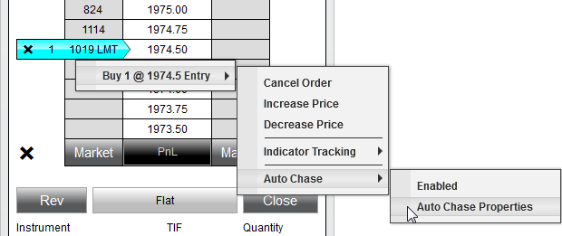
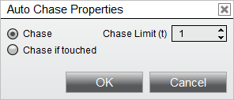

|
<< Click to Display Table of Contents >> Auto Chase |


|
Auto Chase
|
<< Click to Display Table of Contents >> Auto Chase |
|
Auto Chase will automatically adjust the price of a limit order as the market moves away from it.
1. Chase Limit |
The maximum amount that Auto Chase will adjust your limit order price |
2. Chase |
Enables Auto Chase on your entry orders |
3. Chase if touch |
Enables Auto Chase if touched on your entry orders |
4. Target Chase |
Enables Auto Chase if touched on your Profit Target orders |
NinjaTrader will automatically adjust the price of your limit order with each tick the market moves away from your order up until the Chase Limit amount is reached. |
 How does Chase if touched work?
How does Chase if touched work?
The difference between Chase and Chase if touched is that Chase if touched does not start chasing until your limit price has been touched. This works well for Profit Target orders. Your Profit Targets will rest at their respective limit price, if the market moves to the target and backs off but the target order does not fill, NinjaTrader would then start adjusting the target order to chase the market up until the Chase Limit amount. |
 How to enable the Auto Chase features
How to enable the Auto Chase features
Auto Chase can be set as part of an ATM Strategy (set the parameters you want use before entering the ATM Strategy). However, you can also enable or disable Auto Chase on working limit orders.
If you move your mouse over an active limit or Profit Target order in the buy cell for a buy order or sell cell for a sell order and press down on your right mouse button, you will see a menu of all working orders. Each working order menu has a sub menu that displays any applicable strategies that can be enabled or disabled. In the image below, you can see that Auto Chase is currently disabled. By selecting the "Auto Chase" menu, you can enable or disable it. You can change the parameters by selecting the "Auto Chase Properties" menu when Auto Chase is disabled.

The Auto Chase Properties window will allow you to select either Chase or Chase If Touched as well as the Chase Limit offset. Once the Auto Chase Properties have been configured, you will be able to navigate back to the Auto Chase sub-menu and check Enabled to turn on the Auto Chase features for the current strategy.
 |
Auto Chase Example #1Chase Limit - 5 Buy Limit Price - 1000 (SP Emini contract) Chase - Enabled Current Bid - 1000.25
In this example, if the bid moves up to 1000.50, Auto Chase will adjust the buy limit price to 1000.25, subsequently each additional tick rise in price on the bid will adjust the buy limit price accordingly to a maximum price of 1001.25 which is Buy Limit Price + Chase Limit = 1000 + 5 ticks = 1001.25.
Auto Chase Example #2Chase Limit - 5 Buy Limit Price - 1000 (SP Emini contract) Chase if touched - Enabled Current Bid - 1000.25
This example works in the same manner as example #1 with the exception that chasing does not start until the bid has touched the limit price of 1000. |